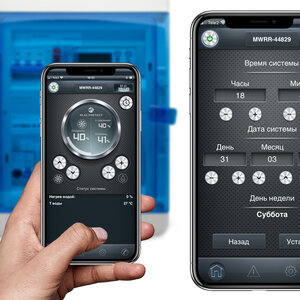

Alpine linux установка и настройка.Зачем использовать Alpine в качестве основы docker-образа в черновиках
Скрыть рекламу:Не иAlpine linux установка и настройкантересуюсь этой темойТовар куплен или услуга найденаНарушает закон или спамМешает просмотру контента
По зову сердца и работе в Digital Design в качестве системного инженера, мне часто приходится сталкиваться с переусложненными программными продуктами и архитектурными конструкциями. Это вызывает страстное желание минимизации и упрощения всего, что попадается под руку, и приводит к восторгу от человеческих решений, просто делающих свою работу, без регистрации и смс.
Так я и познакомился с Alpine Linux.
Этот дистрибутив может вам понравиться по следующим причинам:
Под «мэйнстримом» я подразумеваю тройку CentOS - Debian - Ubuntu (конечно же, ими мир не заканчивается), да простят меня все верующие в эти замечательные дистрибутивы. При их использовании, периодически, на границе восприятия, возникает колкая мысль – «а может быть можно проще?».
$ holywar mode disable
Неужели для решения вашей небольшой задачи требуется все это:
Замечательная systemd. Система инициализации (уже не совсем), которая может произвести впечатление системы управления шаттлом?
Ненене!
Никто не говорит, что в управлении ею нельзя разобраться, но ее безудержный рост может начать пугать, а число концепций явно превышает минимально необходимый набор. Это все действительно необходимо для реализации простой задачи и очень нечастой перезагрузки сервера?
Подсистема журналирования / аудита, построенная на связке вроде journald → rsyslogd + auditd?
Несомненно, это здорово!
Можно догадываться, почему это сделано именно так, но действительно ли для моей простой задачи требуется такая цепочка?
Дублирование функциональности периодического выполнения задач как в systemd, так и в crond?
Ох уж этот Cron!
Неужели мне не хватает его классического механизма? Возможно, его синтаксис может быть не совсем очевиден, но так ли очевидны таймеры в s-d?
Обучение программированиюpraktikum.yandex.ru₽Продавец: ООО «ДК БИЗНЕС». Адрес: 129226, г. Москва, ул. Сельскохозяйственная, д. 11, корп. 3, этаж 1, пом. II, ком. 2 (РМ114). ОГРН: 1207700184780Ламинат и Паркет Quick-Stepdigacompany.ruПакет Мой Офис для Linux!office.lanitecm.ru
Сосуществование нескольких подсистем управления сетью в разных сочетаниях: классический networking / networkd / NetworkManager?
Управлять сетью надо много!
Такое сочетание, да на серверной системе, да с несколькими интерфейсами управления на все вкусы. Хотя нет, давайте добавим сюда еще и netplan, «решающий» проблему конфигурации для перечисленных подсистем. Вам свой сервис хочется завести, или часто менять орбиту за счет переконфигурирования сетевых интерфейсов?
Сервисы вида tuned и firewalld?
Как же без них?
Так ли они нужны для вашей задачи? В принципе, неплохо рассматривать firewalld как попытку сбежать от синтаксиса iptables, но в результате вы вместо одного синтаксиса будете разбираться в другом и недоумевать от размера команд firewall-cmd. И вам действительно в базовой системе нужен интерпретатор python и его процессы? Нет, я люблю python, но не в этом случае.
Локальный почтовый сервис. Вы точно будете его использовать?
Раз уж мы вспомнили про минимализм, можно очень грубо сравнить наши дистрибутивы-лидеры в их минимальном варианте установки:
holywar: cannot change mode to ‘disable’: Permission denied
Хочется странного
От части перечисленного выше можно (попробовать) избавиться вручную, но вдруг все уже придумано за нас? В идеале, от дистрибутива серверной операционной системы общего назначения хочется видеть:
И на этом почти все, остальное - дело менеджера пакетов. Меньше исполняемого кода и конфигурации – меньше багов, меньше багов – меньше багов. А система все также запущена и доступна по сети. Идея выглядит неплохо, теперь посмотрим, насколько близок к ней дистрибутив Alpine Linux .
Чем может очаровать Alpine, особенно после CentOS? Отчаянным минимализмом!
Ну и, конечно, отсутствием необходимости сертификации «Linux Systemd Certified Voldemort ».
А именно:
Продавец: ООО «ДК БИЗНЕС». Адрес: 129226, г. Москва, ул. Сельскохозяйственная, д. 11, корп. 3, этаж 1, пом. II, ком. 2 (РМ114). ОГРН: 1207700184780Ламинат и Паркет Quick-StepПодробнееdigacompany.ru₽Пакет Мой Офис для Linux!Подробнееoffice.lanitecm.ruВся вентиляция в твоем смартфоне!Подробнееelectrotest.ru
В итоге мы получаем систему, снабженную рядом дополнительных механизмов защиты, позволяющую решить имеющуюся задачу и занимающую около 130 МБ . В запущенной системе установлен 41 пакет и выполняется 13 пользовательских процессов, можно стучаться по ssh.
И больше ничего. Осталось добавить то, что нужно вам (да и iptables с возможностью восстановления конфигурации при старте поставьте).
Приоткроем крышку
Обратите внимание – Alpine может пригодиться как учебная площадка при ознакомлении с ОС Linux! Увидеть логику работы компонентов субъективно проще, чем пытаться охватить сходу CentOS или Ubuntu:
Как видите, это не всегда эти ваши нелюбимые "портянки":
Продавец: ООО «ДК БИЗНЕС». Адрес: 129226, г. Москва, ул. Сельскохозяйственная, д. 11, корп. 3, этаж 1, пом. II, ком. 2 (РМ114). ОГРН: 1207700184780Ламинат и Паркет Quick-StepПодробнееdigacompany.ru₽Пакет Мой Офис для Linux!Подробнееoffice.lanitecm.ruБУ Сервера IBM - Проверены!Подробнееsibrs.ru
Переменные, используемые при выполнении скрипта, определяются в соответствующем файле /etc/conf.d/syslog. В нашем случае, в файле определена переменная SYSLOGD_OPTS="-Z".
Обратите внимание - в скрипте декларативно определены зависимости данного сервиса.
Openrc честно перебирает в заданном порядке скрипты запуска, достигает уровня «default» - и вот она, рабочая система!
Демоны под крышкой
Что же именно скрывается под скриптами запуска openrc? Как ни странно - набор задач и демонов, перечисленных ниже.
Ура, после выполнения этих шагов система готова к работе! Не забудем и про зависимости от перечисленных выше сервисов, которые были заданы в init.d файлах:
18+Программа для контроля на компьютерПодробнееru.neospy.tech₽Вся вентиляция в твоем смартфоне!Подробнееelectrotest.ruМобильное приложение под ключ!Подробнееvoid.az
Открываем одну из локальных консолей, где нас поджидает getty, вводим логин, после чего передаем пароль процессу login и получаем доступ к запущенному командному интерпретатору ash (при запуске которого выполняется содержимое файлов /etc/profile, /etc/profile.d/* и ~/.profile для подготовки пользовательского окружения).
Ура, никаких дополнительных сущностей (несомненно, полезных в ряде случаев, вроде PAM) - а мы в системе!
Осталось воспользоваться пакетным менеджером apk, и поискать нужные нам для нашей задачи пакеты. (Есть ли они там? Можно оценить это через веб-портал).
Дистрибутив Alpine не идеален, но его лаконичность меня действительно впечатлила, особенно в роли контейнера (всего 6 процессов - init, 4*getty, syslogd). Для меня он выглядит так, как должна выглядеть минимальная серверная операционная система (прости меня, CentOS!).
Кроме того, он вполне подходит на роль учебной площадки, позволяющей увидеть, из чего состоит современный дистрибутив, не погружаясь сразу в пучину whateverd-сервисов и многократного дублирования функциональности в великолепно-многоуровнево-конфигурируемых-средствах на все случаи жизни.
Alpine Linux объяснить проще. Это линукс на musl и busybox. Чуть менее минималистичный и менее упоротый, чем TinyCore. Годится для всяких служебных виртуалок и контейнеров, от которых не требуется ни глибц-шной полноценности, ни арчевского обилия хипсторского ПО.
Ansible - это configuration management over SSH. Собственно, механизм для массового копирования по sftp и запуска скриптов. Большинство из готовых скриптов на python2, поэтому на кореосе (где вырезан не только перл, но и питон) приходится приседать (скриптом).
Пакет Мой Офис для Linux!Подробнееoffice.lanitecm.ru₽Продавец: ООО «ДК БИЗНЕС». Адрес: 129226, г. Москва, ул. Сельскохозяйственная, д. 11, корп. 3, этаж 1, пом. II, ком. 2 (РМ114). ОГРН: 1207700184780Ламинат и Паркет Quick-StepПодробнееdigacompany.ruГНСС-платы на 48% выгоднее рынкаПодробнееorsyst.ru
Хорош тем (в отличие от puppet и salt), что
а) можно использовать для установки софта на свежекупленные дешёвые VPS
б) "центр управления" практически неуязвим для атак
Дешёвые VPS (я говорю о ценах в разы ниже достаточно демпингующего DigitalOcean) в 100% (известных мне) случаев не поддерживают third-party images и даже SSH keys. Т.е. по-старинке как в 90-е сервер закупается вручную в шоппинг-карте и приходит емейл с адресом и рутовым паролем. Как правило, стоит панель вроде SolusVM, предоставляющая сервис переустановки и recovery console, и всё.
Ansible позволяет, по-крайней мере, теоретически, на такой говносервер ни разу вручную не заходить. Потому что работает поверх голого SSH - никакого софта не требуется на управляемых хостах.
"Центр управления" Ansible основное время (когда конфигурация не меняется) вообще в оффлайне, а когда в онлайне - не слушает порты и может быть скрыт за NAT, работать под нерутом и достаточно легко зацементирован средствами Mandatory Access Control. А секреты лежать в ссш-агенте. Т.е. поверхность атаки очень мала, и надо суметь скрыть атаку от интерактивно присутствующего администратора. Конечно, тут есть много "но" - например, могут какие-то операции выполняться скриптами, что потребует постоянно запущенного демона, но всё равно обеспечить принцип минимальных привилегий легче, чем у конкурентов.
Вдобавок Ansible не требует постоянной работы дополнительных демонов на управляемых хостах. Но мне это как раз не критично - главное, что отсутствует постоянное постукивание в центр, и не слушаются дополнительные порты.
Puppet и Salt же:
а) имеют центральный сервер, постоянно находящийся в сети и доступный для exploitation. Причём сервер засекурен не через OpenSSH, а через самописные хипсторские сервера, что существенно повышает вероятность zero-day.
б) требуют для работы бутстрапа (вручную или с помощью инструментов, аналогичных Ansible) - установки агента и постоянной его работы в качестве демона.
Паппет с приседаниями можно заставить работать без центрального сервера. Но это не рекомендовано для массового деплоя, поскольку много надо писать самому. А в ансибле это основной поддерживаемый сценарий.
Короче, надо теперь смотреть, сможет ли ансибле поменять локаль:) Ну, и учить их кукбуки - может это окажется полной парашей (в стиле chef) говорят, более-менее то же самое по сравнению с довольно сияющими декларативностью, идемпотентностью и augeas из паппета.
Alpine Linux - это операционная система на базе Linux с открытым исходным кодом, которая предоставляет пользователям ориентированную на сервер безопасную вычислительную среду. Это легкий, небольшой и простой дистрибутив Linux, основанный на пакетах Busybox и musl.
Распространяется в нескольких изданиях
18+Программа для контроля на компьютерПодробнееru.neospy.tech₽18+amoCRM + PinscherCRM = Взрыв продажПодробнееlp.pinschercrm.ruВся вентиляция в твоем смартфоне!Подробнееelectrotest.ru
Проект распространяется в нескольких изданиях, каждый из которых имеет свои собственные цели и способности. Основное издание называется Alpine Linux Standard, оно включает некоторые из наиболее часто используемых пакетов и ориентировано на серверы и маршрутизаторы, которые запускаются непосредственно из ОЗУ (системная память). Второе издание называется Alpine Linux Mini, и на самом деле это минимальная версия Alpine Linux Standard. Он поставляется с некоторыми базовыми пакетами и может быть для установки операционной системы из сети.
Третье издание называется Alpine Linux VServer и включает только пакеты хостов Vserver. Сетевые специалисты могут использовать этот альпийский вкус для развертывания VServer-хостов, которые запускаются непосредственно из ОЗУ. Его также можно установить на локальный дисковод. Наконец, версия Alpine Linux Xen предоставляет пользователям пакеты Xen Dom0 Live CD и Xen. Он поддерживается только на 64-битных аппаратных платформах.
Поддерживает 32-битную и 64-разрядную архитектуры
Как уже упоминалось, проект предоставляет пользователям множество выпусков, распространяемых как изображения Live CD ISO, и поддерживает как 32-битную, так и 64-разрядную архитектуры. Конфигурация сети Alpine Linux аналогична конфигурации Debian, но те из вас, кто ранее использовал операционную систему на основе BusyBox, не должны были работать с этим дистрибутивом.
Разработчики Alpine Linux внесли ряд усовершенствований в BusyBox, чтобы заставить операционную систему работать как и любая другая. Имейте в виду, что он не имеет графической среды.
Нижняя линия
Независимо от того, используете ли вы его для развертывания собственного сервера или маршрутизатора, VServer-хостов и среды с нулевым доменом Xen, Alpine всегда здесь, чтобы помочь вам. Его также можно использовать для развертывания многофункционального сервера ownCloud.
Пакет Мой Офис для Linux!Подробнееoffice.lanitecm.ru₽Продавец: ООО «ДК БИЗНЕС». Адрес: 129226, г. Москва, ул. Сельскохозяйственная, д. 11, корп. 3, этаж 1, пом. II, ком. 2 (РМ114). ОГРН: 1207700184780Ламинат и Паркет Quick-StepПодробнееdigacompany.ruБУ Сервера IBM - Проверены!Подробнееsibrs.ru
Что нового в версии 3.5.2:
Что нового в версии 3.5.1:
Что нового в версии 3.4.5:
18+Программа для контроля на компьютерПодробнееru.neospy.tech₽Вся вентиляция в твоем смартфоне!Подробнееelectrotest.ruМобильное приложение под ключ!Подробнееvoid.az
Что нового в версии 3.4.3:
Что нового в версии 3.4.1:
Продавец: ООО «ДК БИЗНЕС». Адрес: 129226, г. Москва, ул. Сельскохозяйственная, д. 11, корп. 3, этаж 1, пом. II, ком. 2 (РМ114). ОГРН: 1207700184780Ламинат и Паркет Quick-StepПодробнееdigacompany.ru₽Пакет Мой Офис для Linux!Подробнееoffice.lanitecm.ru18+Программа для контроля на компьютерПодробнееru.neospy.tech
Что нового в версии 3.3.1:
Если вы хотите, чтобы ваши приложения запускались быстрее, а docker-образ был меньше, тогда вам стоит попробовать Alpine в качестве базового образа.
Уже давно не секрет, что Docker часто использует Alpine в качестве базового образа для официальных docker-образов. Эта тенденция началась в начале 2016 года. Сейчас почти каждый официальный docker-образ имеет тег Alpine.
Но вряд ли будет так, что вы проснетесь одним прекрасным утром и подумаете: “О! А почему бы мне не использовать другую ОС для всех своих образов”. Тем более, когда до этого по умолчанию официальным образом был Debian. И позиции его были весьма прочными.
Вы всегда можете выбрать docker-образы на основе Debian. Но лучшее ли это решение?
Почему Alpine?
Звучит, конечно, интересно. Но что это значит для тех, кто регулярно использует Docker?
Главное преимущество - сжатие размеров
Если вы используете Docker, то вы должны стремиться к этому сжатию. Благодаря этому ваш docker-образ будет меньше.
Apline 3.6 весит всего 3,98 мб.
Вот сравнение с другими дистрибутивами:
Получается, что Alpine в 25 раз меньше Debian’а.
Всего с Docker Hub были сделаны уже миллионы пулов. Немного покопавшись с его публичным API, можно увидеть, что у Debian 45 275 515 пулов, в то время как у Alpine -целых 397 152 768 (по состоянию на 10.10.2017).
Уменьшение образа на 100 мб может иметь большое значение.
В реально используемых веб-приложениях, в которых установлено множество пакетов, можно заметить 2-3 - кратное уменьшение конечного образа с Alpine. Экономия этих 100 мб останется всегда, вне зависимости от того, что встроено в ваш образ.
Онлайн-конфигуратор SUPERMICROПодробнееittelo.ru₽18+amoCRM + PinscherCRM = Взрыв продажПодробнееlp.pinschercrm.ruВся вентиляция в твоем смартфоне!Подробнееelectrotest.ru
Сравним размер некоторых образов на основе Alpine и разных версиях Debian:
Конечно, если вы захотите использовать образ в реальном приложении, вам надо будет установить несколько зависимостей, поставить необходимые библиотеки и т.д через dockerfile. Все это приведет к “утяжелению” dockerfile’а. Но даже если сравнивать конечный dockerfile на основе debian и alpine, то последний будет легче.
Образ на Alpine следует использовать, когда конечный образ должен быть как можно меньше. Чтобы образы на основе Alpine были меньше, туда не включены такие инструменты, как git или bash. Если вы используете Alpine в качестве основы образа, то для установки необходимых вам пакетов их нужно добавить в dockerfile.
Alpine быстрый
Уменьшение размеров не единственное преимущество использования маленьких docker-образов.
Изначально цель была, чтобы система запускалась из RAM. То есть, это “одноразовая” система, которая переустанавливается после каждого перезапуска. И это отлично вписывается в концепцию контейнеров.
Да, такими дистрибутивами, как Debian или Ubuntu пользовать легче, но они слишком большие и медленные по сравнению с Alpine. apt-get update тратит столько же времени на обновление списка актуальных пакетов, сколько Alpine тратит на установку или обновление всей системы. В Alpine используется свой менеджер пакетов apt-tools (ничего общего с форматом.apk в Android). Apk расшифровывается как “alpine package keeper”. Поскольку Alpine должен быть очень легкой системой, то нужен очень быстрый менеджер пакетов. В одном интервью один из разработчиков Alpine говорил: “Мы рассматривали pacman от arch linux, также deb, ipkg, .rpm и другие. Но приняли решение использовать свой менеджер пакетов, руководствуясь требованием “run-from-ram”.
Еще одно преимущество того, что образ не занимает много пространства, заключается в том, что не так много целей для атаки.
Когда в системе мало пакетов и библиотек, шанс того, что что-то пойдет не так заметно снижается.
Для обеспечения безопасности системы разработчики делают упор не на фикс багов, которые привели к уязвимости, а делают все, чтобы эти баги не появились. В ядре системы минимально компонентов. В Alpine не устанавливается ничего, чем пользователи никогда не будут пользоваться. Например, BashShell. Вместо него используется по умолчанию используется BusyBox Bash. Кроме того, Alpine предоставляет блоки, из которых пользователь сам собирает то, что ему надо. Во многих дистрибутивах дела обстоят иначе: многие компоненты включены по умолчанию, и пользователям приходится самостоятельно отключать некоторые компоненты, чтобы обеспечить безопасность системы. И если находится библиотека, которая по мнению разработчиков более безопасна, то они ее меняют. Так они заменили OpenSSL на LibreSSL, т.к. по мнению разработчиков Alpine, эта библиотека является более безопасной.
Пакет Мой Офис для Linux!Подробнееoffice.lanitecm.ru₽Продавец: ООО «ДК БИЗНЕС». Адрес: 129226, г. Москва, ул. Сельскохозяйственная, д. 11, корп. 3, этаж 1, пом. II, ком. 2 (РМ114). ОГРН: 1207700184780Ламинат и Паркет Quick-StepПодробнееdigacompany.ruБУ Сервера IBM - Проверены!Подробнееsibrs.ru
Несколько лет назад существовал bash-эксплойт, который позволял получить контроль над машиной, если она поражена так называемым “Shellshock”. Alpine таким атакам не был подвержен, так как по умолчанию bash там не установлен.
Установка пакетов на Alpine
Как я уже писал, для управления пакетами в Alpine используется apk. И некоторых пакетов, которые вам будут нужны, по умолчанию не будет в Alpine. Придется ставить их самостоятельно. Названия пакетов для Debian и Alpine будут отличаться. Например, чтобы установить пакет, который в Debian называется libpq-dev, в Alpine надо прописать apk add postgresql-dev.
Используйте лучший инструмент для работы
Alpine он делает все, чтобы быть легким и безопасным дистрибутивом. Поэтому использование Alpine в качестве основы для Docker-образа является оптимальным решением.
P.s. Спасибо моим коллегам из
Installation Quick-Start in 3 Easy Steps
Installation Handbook
Alpine can be booted or not, just use it. Alpine Linux installation process are so flexible that indeed can just boot up inside other broken Linux. You believe that every system needs a DVD disc, or a USB to install it?, but Alpine may not even need it , so much so that it can even boot from its phone memory. Obviously the more exquisite the more complicated method .
A proper setup of your system are need, but if you deploy all of an ecosystems in your own home and job.. in your only machine... you will need a proper guide to setup your main system (or maybe a parallel system?).
As any Linux installation, Alpine start process by booting from an external device (CD/DVD, USB Drive, etc...).
As Alpine uses Linux kernel, start step of collecting information to initialize a minimum system, the setup-alpine will copy files. This minimun system started before proceed to property install are a diskless mode started from the orig medium.
The post installation step provides the way to choose the root password, and eventually boot up the new installed system.
Overview of run modes for Alpine system
Alpine can be used in any of three modes respected the install process :
diskless mode
You"ll boot from a read-only medium such as the installation CD, a USB drive , or a Compact Flash card .
Tip: To prepare either a USB or Compact Flash card, you can use the setup-bootable script; see the pages linked above for details.
This mode may be used for desktops , development boxes, and virtual servers.
Further Documentation
Post-Install